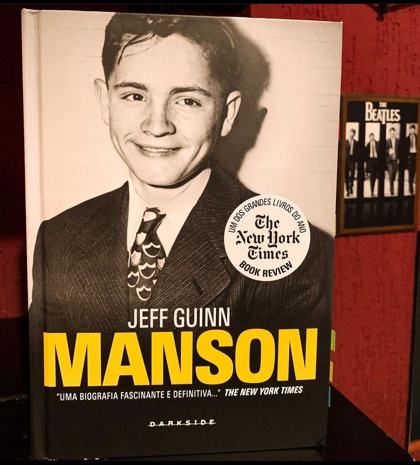

Manson: A Biografia
(Jeff Guinn - Darkside)
⭐⭐⭐⭐⭐
Amor Livre, LSD e rock ‘n’ roll ✌🏻🍀🎸
Esta maravilhosa biografia escrita por Jeff Guinn com toda certeza, também está entre os melhores livros que li em 2021. É notável que o autor estudou muito para escrever o livro e abordou todos os lados da história de Charles Manson passando pelo seu nascimento, sua infância e adolescência conturbadas até os fatos que levaram aos assassinatos das famílias Tate-LaBianca e seu julgamento.
Sexo, drogas e rock ‘n’ roll. Crimes, estupros e assassinatos. Charles Manson fez de sua história a trilha sonora do fim do mundo. A metáfora favorita da América para o lado negro dá década de 1960, Manson foi o cabeludo que matou o sonho de Woodstock e o retrato perfeito de como toda aquela filosofia da geração paz e amor não funcionou.Psicopata, vigarista, racista e cafetão. Olhos em chamas, barba por fazer, cabelos despenteados e uma suástica tatuada na testa. A diabólica imagem de Charles Manson está gravada no inconsciente popular e é reconhecidamente assustadora. Após quatro décadas dos seus terríveis atos, os assassinatos orquestrados por ele continuam a exercer um mórbido fascínio. Dezenas de livros já foram escritos sobre Manson nesses mais de quarenta anos, e agora uma meticulosa pesquisa desenvolvida pelo biógrafo Jeff Guinn surge como o guia definitivo do homem que entrou para a história como sinônimo do mal.
Se você quer conhecer a fundo toda a história de Manson sem sensacionalismo, entender como ele fundou e criou para si uma família (ou seria seita ?) tão fiel e como ele controlava todos, você precisa ler este livro. Aqui também você entender a verdade por trás dos assassinatos e ver que tudo não era simplesmente “helter skelter”, a coisa é bem mais complexa que isso. E Charlie, apesar de um babaca não era louco, era complexo.